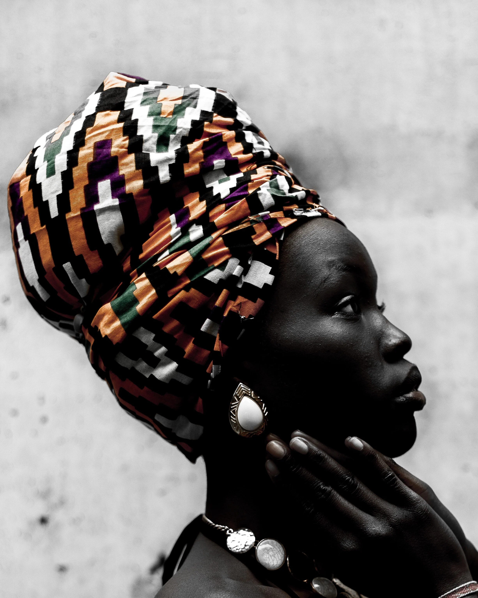

2020-01-22
Building Up Those Antiracist Muscles For The New Year
One of the ways I build my antiracist muscles is by constantly challenging my growing edge and purposefully putting myself in situations that require me to increase my stamina for discomfort. This results in an ongoing battle with my white privilege and internalized racial superiority. My work around white shame is teaching me to dig deeper into my own shame story because I have witnessed (in myself and others) the way that shame keeps us from authentically connecting. Shame is a sneaky tool for upholding white supremacy. I hope these resources are helpful.
See you on the journey,
Robin
This first article by Reneé Cherez brings me to a very raw and appreciative place. It is so connected to a recent conversation I had with a friend of color who I had disappointed. It sucked to hear, and at the same time, I was and am so grateful that she loves me enough to go there with me. What has become crystal clear to me is that I am still censoring my thoughts and feelings when I’m talking with my friends and colleagues of color. I know that if I am to really live and practice what I preach and teach, I have to be willing to let it all hang out. I can’t hope to be trusted if I am not willing to show all of myself. For me, this article is another call to action.
Link to article:
https://medium.com/@reneecherez/an-open-letter-to-my-white-friends-8613fa1e2dec

This title of this article may sound funny and it does have a sarcastic tone but make no mistake, it is about a serious issue. It is about white women’s appropriation of black women’s ideas, history and culture. I have always loved and admired the beautiful head wraps that I have seen Black Women wearing. When I was trying to grow my hair out, it used to get really frizzy and I just wanted to be able to cover it up sometimes. So I started to think about those beautiful head wraps and how great it would be if I could wear one on my “bad hair days.” I went through some serious wrestling with my white privilege. It was whining like a spoiled child, “that’s not fair, why can’t I wear one?” Thankfully, I checked it and found some other ways of covering my hair that didn’t appropriate black women. This article reminded me of that story and I appreciate the brief history that the author shares. I also appreciate that she (a white woman) credits and shares resources by People of Color and very strongly urges white people to do our own homework.
Link to article: https://medium.com/the-human-condition/a-brief-history-on-why-white-women-should-not-wear-or-sell-head-wraps-467978b93e9b
Embedded media (requires internet): //www.youtube.com/embed/QyXLoydByfU?feature=youtu.be&wmode=opaque&enablejsapi=1
Layla F. Saad, Good Ancestors Podcast: No White Saviors
In this hour podcast, Layla F. Saad, the author of “The White Supremacy and Me" workbook speaks with two members of the advocacy campaign No White Saviors that started in Uganda. Having spent much of my career working as a therapist for nonprofit organizations in black and brown communities, I am still trying to untangle myself from the toxic roots of white saviorisms. One of the most difficult things for me to confront when I started to unpack my white privilege was the harm I have caused to the children, families, and communities that I thought I was “helping.” This interview speaks to the impact of colonization, globally and how it ties into Internalized Racial Oppression. It speaks to all of us. Please listen!!!
Embedded media (requires internet): //www.youtube.com/embed/qLAqWxH3Crw?wmode=opaque&enablejsapi=1
“Let’s Talk About White Saviorism”
While we are on the topic of white saviorism, "OnlyBlackGirl” holds nothing back in this 12-minute video. There is no sugar coating how she feels about white people thinking that People of Color need saving. She touches on how she feels about white people adopting black and brown children and about the many ways white saviorism shows up in movies, books, and television to make stories centered on black people more palatable for white audiences. This is a call to white people to STOP trying to “save black people and, OnlyBlackGirl makes no attempt to make it palatable for us, so you will need to check your white fragility for this one.
Workshops and Trainings
Race & Conflict: Tools to Transform Conflicts Across Differences
My friend and colleague, Yuko Uchikawa, and I have been working on creating a unique set of trainings that focus on the ways that race and systemic racism impact our styles of engagement and how we handle conflict. Please take a look at the work we are doing and pass it on to any groups or organizations that you think might be interested in doing this work. I am really proud of our collaboration and what we are doing.
https://robinschlengerlcsw.com/new-page
Shame Resilience Skills for White People: Building Pathways to Authentic Conversations with People of Color
Dr. Alana Tappin and I are offering another of our workshops in NYC this April. Our workshop is devoted to teaching white people shame resilience skills as a pathway to having authentic conversations about race and developing the necessary muscle to take proactive positions in promoting racial and social justice.
You can find more information on my website: www.robinschlengerlcsw.com/consulting or go to the Eventbrite link to purchase an early bird ticket: https://www.eventbrite.com/e/shame-resilience-skills-for-white-people-tickets-82815247635
Embedded media (requires internet): //www.youtube.com/embed/aw3yuae8gck?wmode=opaque&enablejsapi=1
CSWAC February workshop: "Color Matters."
The center for the study of white American Culture offers some amazing trainings. Take a look at this video for more information about an online workshop series “Why Color Matters,” that starts in February.
Lastly, to honor and celebrate Dr. Martin Luther King Jr. see the following for information on a local event in Brooklyn:
The 34th Annual Brooklyn Tribute to Martin Luther King, Jr. -
https://www.bam.org/talks/2020/brooklyn-tribute-to-dr-martin-luther-king-2020?utm_source=wordfly&utm_medium=email&utm_content=mlk-pro-2020-01-05&utm_campaign=mlk&sourceNumber=106142